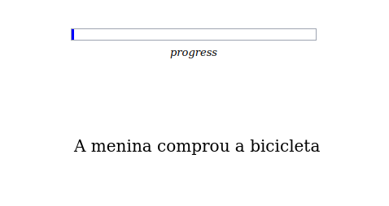
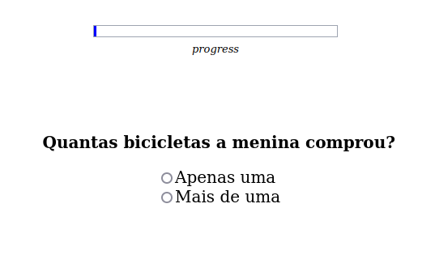
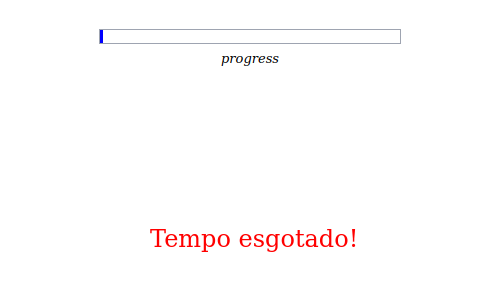
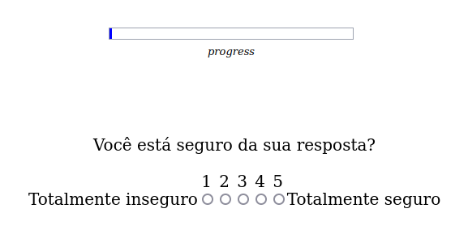
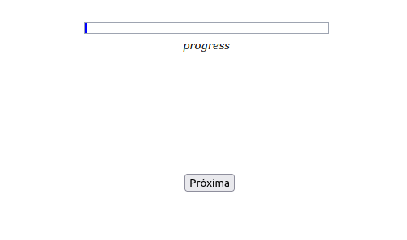

INSTRUÇÕES
Esta tarefa tem por objetivo avaliar a sua interpretação sobre algumas frases, mais especificamente, a sua interpretação sobre quantos elementos estão sendo referidos por elas e o quão seguro você está da sua resposta.
Este não é um exercício de gramática! Não há respostas certas ou erradas, portanto. Queremos apenas saber a sua interpretação mais espontânea sobre as frases.
Para realizá-la, você precisará estar atento e responder de modo rápido, pois a frase só fica na tela por alguns segundos, tempo suficiente para você lê-la, e o tempo para a resposta também é bem curtinho.
Como funciona a tarefa?
1. Primeiro, aparece uma frase na tela, que fica por alguns segundos:

2. Em seguida, a frase some e aparece uma pergunta sobre ela:

3. Se você demorar muito para responder, o tempo se esgota, a pergunta some e um aviso sonoro e visual é dado:

3. Se você marcar dentro do tempo estipulado (4 segundos), uma escala surge na tela, perguntando a sua certeza quanto à resposta dada.
Não há tempo limite para marcar a escala.

4. Após essa etapa, aparece uma tela final com um botão para a próxima frase:

Para você entender melhor, antes de começarmos, vamos fazer um treino.
Pedimos sua atenção e concentração na tarefa, escolhendo um local calmo para realizá-la. Todo o processo dura cerca de 10 minutos apenas.
Vamos iniciar o treino?